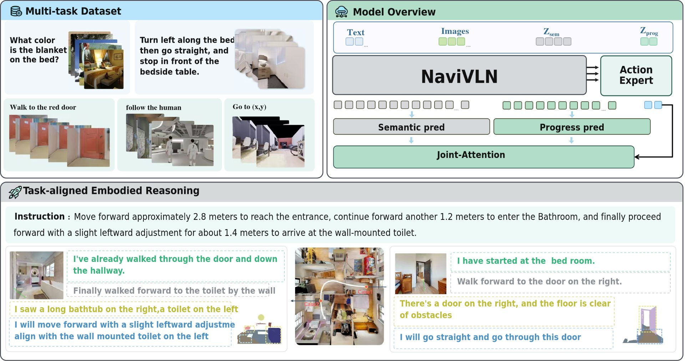
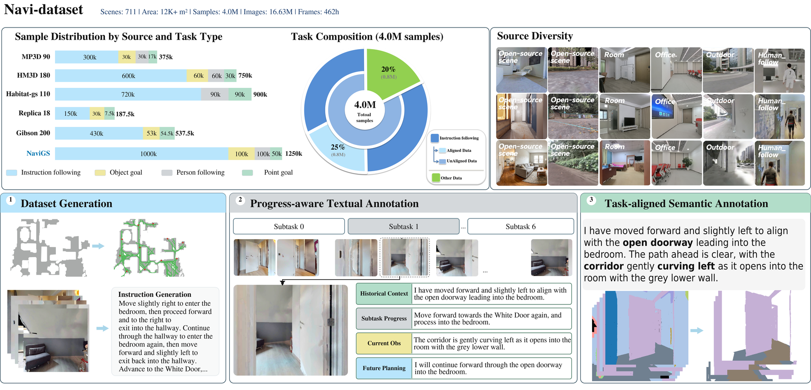
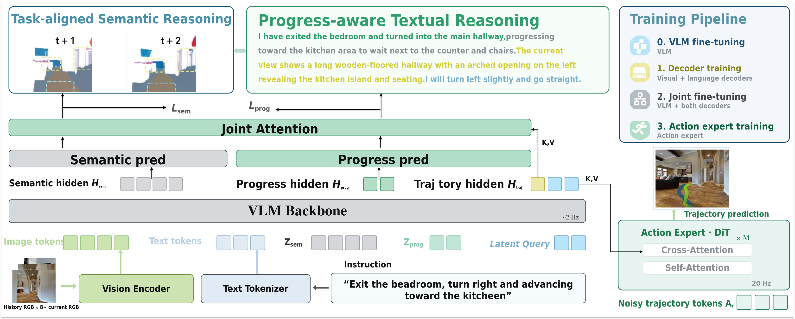

Abstract
Vision-Language Navigation (VLN) integrates spatial perception, instruction understanding, and sequential decision-making. Foundation-model-based policies benefit from multimodal supervision, yet insufficient task relevance and cross-modal correspondence can cause task-agnostic intra-modal redundancy and cross-modal semantic misalignment, limiting sample efficiency and decision consistency.
We present NaviVLN, a dual-system policy built on THREAD (Task-centric Hierarchical Representations via Embodied Alignment for Dual-system), aligning vision, language, and trajectories through data, model, and training. THREAD fuses navigation information into mutually informative visual and textual targets grounding instruction semantics and task progress. Joint Attention integrates implicit visual and textual chain-of-thought during training, shaping shared representations through auxiliary and navigation supervision. Staged training connects these representations to a local trajectory expert; deployment discards auxiliary decoders, using asynchronous intention querying for efficient execution.
On R2R-CE and RxR-CE Val-Unseen, NaviVLN with Joint Attention achieves success rates of 68.3% and 63.7%. Navi-Dataset contains approximately 4.0M effective trajectory samples, of which 0.8M are alignment-annotated decision anchors. On R2R-CE, NaviVLN is 1.4 percentage points above monocular Qwen-RobotNav-4B using about 25.6% as many samples.
How it works
NaviVLN couples task-aligned data grounding with cross-modal latent alignment and a hierarchical trajectory expert.



Learn task-aligned targets
Progress-aware descriptions and projected expert paths form mutually informative visual and textual targets, grounding instruction semantics and task progress in the scene.
Align the latent streams
Implicit visual and textual chain-of-thought are integrated during training; auxiliary decoders shape shared representations that are discarded at deployment.
Execute asynchronously
Staged training connects the representations to a local DiT action expert; slow VLM intention queries and fast closed-loop trajectory updates run asynchronously.
Where can the agent go?
Two-step semantic predictions identify the traversable path region and goal-related scene evidence. Projected expert paths supervise the visual branch, so predicted semantics carry task relevance rather than generic scene structure.
Where is the task now?
Progress descriptions supervise the textual branch with the current stage and next subgoal. Joint Attention couples semantic and progress latents through a stop-gradient navigation reference from the VLM, aligning both branches to the same local decision.
Main results
Tables below follow the current paper: unseen-scene navigation (Table 1), predictor organization (Table 2), training-stage and DiT variants (Table 4), and real-world instruction following (Table 5). NE is in meters; OSR, SR, SPL, and nDTW are on a percentage scale. Training-data counts use each method's own units and are not interchangeable.
| Method | Backbone | Inputs | Train data | R2R-CE Val-Unseen | RxR-CE Val-Unseen | |||||
|---|---|---|---|---|---|---|---|---|---|---|
| NE ↓ | OSR ↑ | SR ↑ | SPL ↑ | SR ↑ | SPL ↑ | nDTW ↑ | ||||
| ETPNav | Graph Transformer | Pano., Odo., Depth | — | 4.71 | 65.0 | 57.0 | 49.0 | 54.8 | 44.9 | 61.9 |
| ScaleVLN | HAMT | Pano., Odo., Depth | 4.9M | 4.80 | — | 55.0 | 51.0 | — | — | — |
| NavFoM | Qwen2-7B | Four-view RGB | 12.7M | 4.61 | 72.1 | 61.7 | 55.3 | 64.4 | 56.2 | 65.8 |
| ABot-N0 | Qwen3-4B | Pano. | 16.9M | 3.78 | 70.8 | 66.4 | 63.9 | 69.3 | 60.0 | — |
| NaVid | LLaMA-VID-7B | Mono RGB | 1.28M | 5.47 | 49.1 | 37.4 | 35.9 | — | — | — |
| Uni-NaVid | Vicuna-7B | Mono RGB | 3.58M | 5.58 | 53.3 | 47.0 | 42.7 | 48.7 | 40.9 | — |
| NaVILA | VILA (Llama 3-8B) | Mono RGB | ~13.1M | 5.22 | 62.5 | 54.0 | 49.0 | 49.3 | 44.0 | 58.8 |
| StreamVLN | LLaVA-Video-7B | Mono RGB | ~26.3M | 4.98 | 64.2 | 56.9 | 51.9 | 52.9 | 46.0 | 61.9 |
| InternVLA-N1 | Qwen2.5-VL-7B | Depth, Mono RGB | >5M | 4.83 | 63.3 | 58.2 | 54.0 | 53.5 | 46.1 | — |
| DualVLN | Qwen2.5-VL-7B | Mono RGB | ~12M | 4.05 | 70.7 | 64.3 | 58.5 | 61.4 | 51.8 | 70.0 |
| FutureNav-4B | Qwen3-VL-4B | Mono RGB | 10.46M* | 4.24 | 70.2 | 65.4 | 61.3 | 60.9 | 52.8 | 68.0 |
| Qwen-RobotNav-4B | Qwen3-VL-4B | Mono RGB | 15.6M | 4.22 | 73.6 | 66.9 | 60.5 | 71.3 | 61.5 | 68.6 |
| NaviVLN (Joint) | Qwen3-VL-4B | Mono RGB | ~4.0M | 3.14 | 76.18 | 68.3 | 63.55 | 63.7 | 55.53 | 65.23 |
Table 1 notes. Pano. = panoramic observations; Odo. = odometry. *FutureNav reports 10.457M external samples plus approximately 2.43M benchmark training samples. A dash marks an entry not reported by the respective method. For NaviVLN, the 0.8M alignment-annotated decision anchors are contained within the same 4.0M effective trajectory samples.
| Configuration | R2R-CE Val-Unseen | RxR-CE Val-Unseen | |||||
|---|---|---|---|---|---|---|---|
| NE ↓ | OSR ↑ | SR ↑ | SPL ↑ | SR ↑ | SPL ↑ | nDTW ↑ | |
| Separate | 3.27 | 74.62 | 64.2 | 58.92 | 61.2 | 53.47 | 62.46 |
| Merged | 3.42 | 73.85 | 62.5 | 57.90 | 59.4 | 52.22 | 61.78 |
| Joint w/o cross-branch K/V | 3.52 | 72.17 | 63.2 | 58.81 | 61.6 | 53.25 | 64.26 |
| Joint w/o navigation reference | 3.71 | 71.76 | 61.8 | 57.65 | 58.2 | 50.42 | 60.35 |
| Joint w/ cross-branch gradients | 3.21 | 75.32 | 67.5 | 62.87 | 62.7 | 54.51 | 64.17 |
| Joint + alignment loss | 3.44 | 73.22 | 66.3 | 61.62 | 63.4 | 54.95 | 64.86 |
| Joint (full model) | 3.14 | 76.18 | 68.3 | 63.55 | 63.7 | 55.53 | 65.23 |
Removing cross-branch K/V excludes the other branch's latent states from attention; the variant without the navigation reference removes the shared trajectory reference from both branches. The alignment-loss variant adds an explicit cross-branch objective but does not improve on the full model.
| Configuration | Training stages | R2R-CE Val-Unseen | RxR-CE Val-Unseen | ||
|---|---|---|---|---|---|
| SR ↑ | SPL ↑ | SR ↑ | SPL ↑ | ||
| Stage 0 + DiT | 0 → 3 | 56.9 | 49.6 | 52.7 | 39.8 |
| Skip Stage 2 | 0 → 1 | 57.9 | 51.21 | 54.6 | 41.63 |
| Stage 0 + explicit CoT | 0 | 60.3 | 54.88 | 56.1 | 44.60 |
| Skip Stage 1 | 0 → 2 | 62.7 | 55.43 | 58.6 | 47.75 |
| Joint + DiT | 0 → 1 → 2 → 3 | 67.1 | 61.82 | 61.8 | 54.17 |
| Full Joint | 0 → 1 → 2 | 68.3 | 63.55 | 63.7 | 55.53 |
With explicit CoT, the model generates reasoning text before the navigation answer. The DiT action expert is introduced at Stage 3; adding it to Stage 0 or to the full Joint representation does not improve on the corresponding non-DiT configuration, and the full Joint schedule remains the strongest.
| Configuration | Visual supervision | Total trials | Total successes | SR (%) ↑ |
|---|---|---|---|---|
| RGB0.8M | Future RGB | 75 | 26 | 34.7 |
| RGB16M | Future RGB | 75 | 38 | 50.7 |
| Sem-Merged | Task-aligned semantics | 75 | 40 | 53.3 |
| Sem-Separate | Task-aligned semantics | 75 | 46 | 61.3 |
| Sem-Joint | Task-aligned semantics | 75 | 52 | 69.3 |
A trial succeeds when the robot completes the instruction, including any requested stop or door crossing. Sem-Joint reaches 69.3% success, outperforming the strongest monocular-RGB baseline by 18.6 percentage points.
Qualitative results
Featured real-world execution followed by five-view synchronized simulation episodes. All clips use the same NaviVLN (Joint) configuration.
Citation
If you find this work useful, please cite it. Author information will be added in the camera-ready version.
@article{navivln2027,
title = {NaviVLN: Task-Centric Hierarchical Vision-Language Navigation},
author = {Anonymous Authors},
journal = {Under review as a conference paper at ICLR 2027},
year = {2027}
}